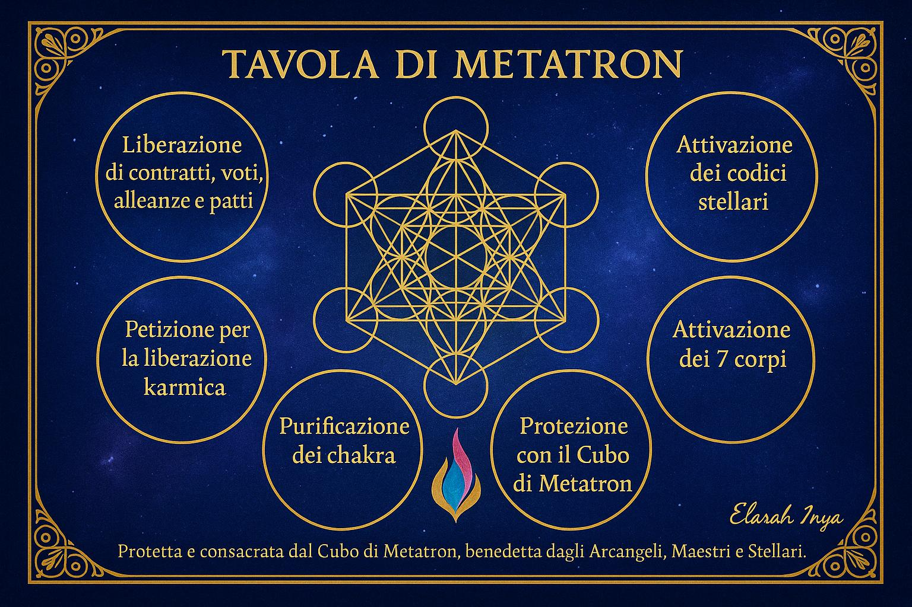

✧ Trattamenti Energetici con Tavole Sacre Canalizzate ✧
Sono Elarah Inya, Sacerdotessa Multinazionale dell’Anima. Offro trattamenti energetici canalizzati usando Tavole Sacre create per la liberazione karmica, la purificazione aurica, la riunione dell’anima e l’attivazione dei chakra.
In ogni incontro lavoro in profonda connessione con il Cuore Stellare, i tuoi Registri Akashici e le mie tavole canalizzate, per aiutarti a guarire, liberare blocchi e ricordare la tua verità interiore.
✧ Come funziona il trattamento?
🌿 Connessione energetica alle Tavole Sacre.
🌿 Canalizzazione di informazioni e messaggi.
🌿 Trasmutazione e riequilibrio del campo energetico.
🌿 Uso di pendolo, cristalli, sigilli e parole di potere.
✨ Ogni sessione è unica e personalizzata.
📌 Ricevibile a distanza, con resoconto scritto o audio.
Tavola per la Liberazione delle Ferite Karmiche
✨ Lavoro energetico mirato a sciogliere le ferite profonde
Identificazione della ferita attiva
Trasmutazione karmica
Guarigione con sigilli e frasi canalizzate
Chiusura del ciclo energetico
🌸 Ideale per chi sente pesi karmici o schemi ripetitivi
Tavola di Protezione e Purificazione Aurica
✨ Serve a:
Trasmutare larve astrali
Chiudere portali o fughe energetiche
Rafforzare l’aura
Sigillare il campo con frequenze di luce
🌸 Per chi si sente scarico o energeticamente vulnerabile
Tavola per la Riunione dei Frattali dell’Anima
✨ Consiste nel richiamo e reintegrazione dei tuoi Frattali
Lemuriani
Siriani
Terreni (vite passate)
Futuri, paralleli e multidimensionali
Paralleli e multidimensionali
Frattali feriti (guarigione)
🌸 Per chi cerca completezza e riconnessione interiore
Tavola di Lettura Aurica e Chakra
✨ Si svolgono:
Lettura aurica con pendolo
Identificazione di blocchi
Armonizzazione con codici di luce
Attivazione del flusso energetico
🌸 Per centratura, equilibrio e chiarezza interiore
Tavola di Attivazione della Luce Interiore
✨ Frase sacra: “Io sono Luce che Guarisce e Frequenza che Risveglia.”
Attivazione energetica personalizzata
Liberazione da bocchi
Sblocco di doni interiori
Allineamento con la missione d’anima
🌸 Per chi desidera ricordare la propria vera essenza
Tavola di Metatron
Questa tavola è un portale energetico ispirato al Cubo di Metatron, il codice di luce che custodisce l’ordine divino e la geometria sacra dell’Universo.

✨ Strumento sacro di liberazione, attivazione e protezione
Al centro, il Cubo di Metatron si attiva come sigillo di verità , equilibrio e trasformazione. Sotto di esso, la Fiamma Trina (blu, rosa e oro) unisce Volontà Divina, Amore Compassionevole e Saggezza Illuminata.
La cornice racchiude la tavola con una frase di protezione e consacrazione che invita la guida degli Arcangeli, dei Maestri Ascesi e degli Esseri Stellari.
✨ È stata canalizzata per guidarti in un lavoro profondo e spiritualmente allineato, attraverso sei settori chiave che rappresentano le principali attivazioni per l’anima:
Liberazione di contratti, voti, alleanze e patti
Petizione per la liberazione karmica
Attivazione di codici stellari
Attivazione dei 7 corpi
Purificazione dei chakra
Protezione con il Cubo di Metatron
🌸 Questa tavola può essere usata con il pendolo, la scrittura intuitiva, i simboli, o come portale meditativo e di guarigione spirituale
✧ Benefici del lavoro con le Tavole Sacre ✧
🌟 Liberazione karmica
🌟 Guarigione emozionale e animica
🌟 Protezione energetica
🌟 Attivazione di codici interiori
🌟 Unità e integrazione del Sé
🌟 Chiarezza spirituale
✧ Modalità ✧
✅ Sessioni a distanza (con resoconto audio o scritto)
✅ Sessioni online dal vivo
✅ Percorsi personalizzati
✧ Come prenotare ✧
Scrivimi in privato per fissare un primo colloquio gratuito.
Creeremo insieme il tuo percorso su misura.
Per maggiori informazioni unisciti al nostro Gruppo WhatsApp
✨ Con amore e presenza,
Elarah Inya ∞